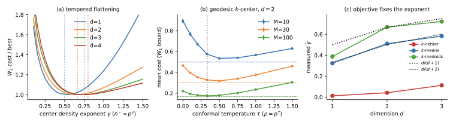
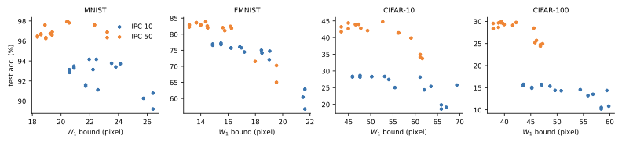
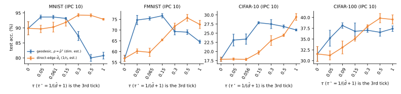
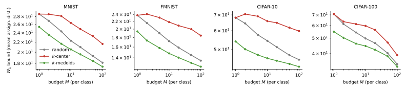

Introduction
Training modern models on web-scale datasets is expensive, and much of the data is redundant. Dataset condensation (also called dataset distillation) asks for a small set on which a model trained from scratch attains accuracy close to training on the full data. Two broad families exist: synthetic methods that optimize a handful of learnable images to match the gradients, feature distributions, or training trajectories of the full data; and selection (coreset) methods that pick a representative subset of real examples. This paper studies the selection family through the lens of covering.
A coreset that $\varepsilon$-covers the data — every point lies within $\varepsilon$ of some selected center — comes with a simple guarantee: for any Lipschitz loss, the discrepancy between training on the full data and on the covering is at most $\mathrm{Lip}(f)\,\varepsilon$. The guarantee is only as good as the covering radius $\varepsilon$, which in turn depends entirely on the distance used to define the cover. Standard covering uses Euclidean distance in pixel or feature space, which ignores two things that matter: the density of the data (uniform-radius balls over-represent sparse regions and waste budget) and the curvature of the manifold on which the data lives (Euclidean chords cut across the manifold). At small budgets, where $\varepsilon$ is necessarily large, both effects degrade accuracy noticeably.
We pursue two complementary remedies. First, we flatten the manifold: a (mixture-)VAE maps the data to a near-Gaussian latent space, and a coordinate-wise CDF (single Gaussian) or Rosenblatt transform (mixture) maps that to a uniform distribution on the cube, where low-discrepancy covering is near-optimal. Second, we make covering density-aware by reweighting the pairwise distance with the local density, so that representatives are allocated in proportion to mass; we show this is a discrete conformal change of metric whose shortest-path closure is a genuine density-aware geodesic. We additionally use a Gaussian-mixture VAE (GMVAE) to learn several local charts of the manifold rather than a single global chart, and to generate synthetic centers by decoding the mixture means.
Contributions. (i) We give a Wasserstein / Kantorovich–Rubinstein bound that ties coreset quality to the covering radius and the choice of distance. (ii) We propose two manifold-aware remedies: flatten-to-uniform via CDF and Rosenblatt transforms, and density-aware conformal covering. (iii) We benchmark covering, $k$-medoids, herding, geodesic and flattened variants — with a standard VAE and an end-to-end trained GMVAE — on MNIST, Fashion-MNIST, CIFAR-10 and CIFAR-100 at $1/10/50$ images per class, and test the theory directly (synthetic checks, accuracy vs. the $W_1$ bound, temperature calibration, a direct test of the loss-gap bound), including what does not transfer. Geodesic distances are computed with stochman.
Related Work
Dataset condensation and distillation. Synthetic-data approaches learn a compact set by matching gradients, feature or output distributions, or training trajectories of a model trained on the full dataset [1][2][3]. These methods optimize pixels and can reach high accuracy, but the resulting images are not real samples, the optimization is expensive, and the learned set transfers unevenly across architectures. We instead stay in the selection regime: our representatives are genuine data points chosen to cover the dataset, which keeps the procedure cheap, interpretable, and architecture-agnostic, at the cost of the covering radius $\varepsilon$ that our bound shows to be the controlling quantity.
Coreset and covering-based selection. Classical coreset and active-learning methods select real points via $k$-center covering, herding, or submodular objectives [4][5]. Our base method, MCS, is a $k$-center cover and inherits the same weakness: the cover is defined by Euclidean distance, which is blind to data density and manifold curvature. This paper targets exactly this limitation by changing the distance (density reweighting, geodesics) or the space (flattening to a uniform cube) in which the cover is computed.
Geometry of generative models. The latent space of a VAE carries a pullback Riemannian metric whose geodesics respect the data manifold [6], and mixture priors yield several local charts rather than a single global one [7]. We use this view for both the flattening map and the density-reweighted distance.
Optimal transport and the probability integral transform. Our loss bound is a $1$-Wasserstein / Kantorovich–Rubinstein argument [8], which connects covering-based selection to the distribution-matching objectives used by synthetic condensation. The flattening step relies on the probability integral transform and, for mixtures, the Rosenblatt transform [9].
Coreset Selection by Covering
Minimum Covering Selection (MCS). MCS chooses a size-$M$ subset $\mathcal{S} \subseteq \mathcal{T}$ so as to minimize the covering radius $\varepsilon$ — the smallest $\varepsilon$ for which the $\varepsilon$-balls centered at $\mathcal{S}$ cover $\mathcal{T}$ (equivalently, a $k$-center cover under distance $d$). The variants we study differ only in the distance $d$: Euclidean, a PCA or random projection of the features, a density-reweighted distance, and quasi-random (Sobol) initialization.
Consider a dataset $\mathcal{T} = \{\mathbf{x}_i\}_{i=1}^N$ and a subset $\mathcal{S} = \{\mathbf{x}_{i(j)}\}_{j=1}^M$. Let $\varepsilon$ be the minimum radius such that $\mathcal{S}$ covers $\mathcal{T}$, and assume the per-sample loss $f$ is $L$-Lipschitz. The empirical loss over $\mathcal{T}$ is
$$ L(f,\mathcal{T}) := \frac{1}{N}\sum_{i=1}^N f(\mathbf{x}_i) = \mathbb{E}_{\mathbf{x}\sim\hat{\mu}}[f(\mathbf{x})], \qquad \hat{\mu} = \frac{1}{N}\sum_{i=1}^N \delta_{\mathbf{x}_i}. $$
Assigning each data point to a covering ball $I_j$ and letting $p_i$ count the balls containing $\mathbf{x}_i$, one can move all mass in a ball to its center $\tilde{\mathbf{x}}_j = \mathbf{x}_{i(j)}$ with weight $\lambda_j = \sum_{i\in I_j} 1/p_i$, giving $\hat{\omega} = \frac{1}{N}\sum_{j=1}^M \lambda_j \delta_{\tilde{\mathbf{x}}_j}$. The two extremes of picking the ball's maximum- or minimum-loss point bracket the loss, and the cleanest statement is the following.
Lemma (covering controls loss via $W_1$). For $L$-Lipschitz $f$, $$ |\mathbb{E}_{\hat{\mu}}[f] - \mathbb{E}_{\hat{\omega}}[f]| \;\le\; L\cdot W_1(\hat{\mu},\hat{\omega}) \;\le\; L\cdot\varepsilon, $$ where $W_1$ is the $1$-Wasserstein distance under $d$.
Proof sketch. The first inequality is Kantorovich–Rubinstein duality. For the second, route the mass at each $\mathbf{x}_i$ to its center $\mathbf{x}_{i(j)}$; every unit of mass travels $d(\mathbf{x}_i,\mathbf{x}_{i(j)})\le\varepsilon$, so $W_1(\hat{\mu},\hat{\omega})\le\varepsilon$. $\square$
The bound scales with $\varepsilon$, which is large when the budget is small. Everything that follows is an attempt to make $\varepsilon$ — measured in a distance that respects the data — smaller. The figure below lets you vary $\varepsilon$ and watch the trade-off between the number of centers $M$ and the bound $L\cdot\varepsilon$.
Flattening the Manifold
A smaller covering radius, measured in a distance that respects the data, yields a tighter bound. One way to get there is to map the data to a uniform distribution on a cube, where a uniform low-discrepancy cover is near-optimal.
Gaussian to uniform. Let $\mathbf{x}\sim\mathcal{N}(\mu,\Sigma)$ with diagonal $\Sigma=\mathrm{diag}(\sigma_1,\dots,\sigma_n)$, so the coordinates are independent. If $F$ is the CDF of a distribution and $x\sim p$, then $F(x)\sim\mathcal{U}[0,1]$. Applying the per-coordinate Gaussian CDF $f_i(t)=\Phi\!\big(\tfrac{t-\mu_i}{\sigma_i}\big)$ maps diagonal-Gaussian samples to uniform samples via $F=[f_i]_{i=1}^n$. A VAE with a Gaussian prior gives us such a map: $F\circ g(\mathbf{x})\sim\mathcal{U}[0,1]^m$ in latent space. The interactive figure shows a Gaussian mixture being flattened to uniform by its CDF.
Mixture Gaussian to uniform — a subtlety. For a mixture $p(\mathbf{x})=\sum_{j=1}^N \lambda_j \prod_{i=1}^n p(x_i;\mu_{ij},\sigma_{ij})$, the marginal of each coordinate is a univariate mixture with CDF $f_i(t)=\sum_j \lambda_j f_{ij}(t)$, so $f_i(x_i)\sim\mathcal{U}[0,1]$ marginally. But the mixture does not factorize across coordinates — the component index $j$ is shared — so the coordinate-wise map $F=[f_i]$ makes each coordinate uniform marginally while the joint $F(\mathbf{x})$ follows a non-trivial copula, not $\mathcal{U}[0,1]^n$. To recover joint uniformity we use the Rosenblatt transform, the sequence of conditional CDFs
$$ u_1 = F_1(x_1), \qquad u_k = F_{k\mid 1:k-1}(x_k \mid x_1,\dots,x_{k-1}), $$
which is uniform on the cube for any joint distribution. For the diagonal mixture each conditional is again a univariate mixture whose weights are the posterior responsibilities $w_j \propto \lambda_j \prod_{l<k} p(x_l;\mu_{lj},\sigma_{lj})$, so every $F_{k\mid 1:k-1}$ is available in closed form.
From a Riemannian viewpoint a VAE learns a single global chart of the data manifold; since not every manifold admits a global chart, a GMVAE with a mixture prior instead learns several local charts and glues them together.
Density-Aware Covering
An $\varepsilon$-coreset is fully characterized by the pairwise distances $d_{ij}=d(\mathbf{x}_i,\mathbf{x}_j)$. Associate each point with a density $p_i>0$ and define the reweighted dissimilarity $\tilde{d}_{ij} := d_{ij}\,p_i p_j$. It is symmetric, non-negative, and zero iff $i=j$, but it is not a metric: the triangle inequality $d_{ik}p_ip_k \le d_{ij}p_ip_j + d_{jk}p_jp_k$ fails whenever an intermediate point has small density $p_j$ (the right-hand side $\to 0$ as $p_j\to 0$). This is harmless here — the finite $\varepsilon$-covering only asks that every point lie within $\varepsilon$ of some center and never uses the triangle inequality. Intuitively, inflating distances in dense regions makes their neighbourhoods effectively sparser and draws more covering centers into them. In the experiments the symmetric option is reported as -metric and the asymmetric option $d_{ij}p_j$ as -cover; -sqrt replaces $p_ip_j$ with $\sqrt{p_ip_j}$.
The figure lets you increase the density strength $\tau$ and watch the $k$-center cover migrate from a Euclidean spread ($\tau=0$) into the dense cluster.
A genuine density-aware metric. If a true metric is wanted, treat the density as a conformal factor and take shortest paths. A conformal metric $\mathrm{d}s=\rho(\mathbf{x})\,\|\mathrm{d}\mathbf{x}\|$ induces the geodesic distance $D(\mathbf{x},\mathbf{y})=\inf_\gamma \int \rho(\gamma)\,\|\dot\gamma\|\,\mathrm{d}t$, always a metric. Its discrete analogue weights each near-neighbour edge by $d_{ij}\sqrt{p_ip_j}$ (a geometric-mean discretization) and takes the shortest-path distance on the neighbourhood graph; the shortest-path closure restores the triangle inequality. The -sqrt variants are the special case that uses direct edges only.
Estimating the density. A kNN/KDE estimate of $p_i$ in pixel space is unreliable: images live in hundreds to thousands of dimensions, where distances concentrate. We instead estimate density on the low-dimensional representation we already learn: kNN/KDE in the VAE latent space; reading it directly off the GMVAE prior $p(\mathbf{z})=\sum_j \lambda_j\mathcal{N}(\mathbf{z};\mu_j,\Sigma_j)$; or using a normalizing flow, whose change-of-variables gives the exact likelihood and simultaneously provides the flatten-to-uniform map.
Calibrating $\tau$ via Zador's theorem. The temperature $\tau$ need not be a free knob. Minimizing $W_1(\hat{\mu},\hat{\omega})$ is an optimal-quantization problem, and Zador's theorem [10][11] gives the asymptotically optimal density of representatives,
$$ n^\star(\mathbf{x}) \;\propto\; \rho(\mathbf{x})^{\frac{d}{d+r}}, $$
with $\rho$ the data density, $d$ the intrinsic dimension, and $r$ the transport-cost order. For $W_1$ ($r=1$) this is $p^{d/(d+1)}$; $k$-means ($r=2$) asks for $p^{d/(d+2)}$ and $k$-center ($r\to\infty$) for $p^0$, i.e. uniform coverage of the support. Note that $d/(d+1)$ increases with $d$: for image data ($d\approx15$) the asymptotically optimal center density is already $p^{0.94}$, close to proportional. A greedy $k$-center in the geodesic metric of a conformal factor $\rho=p^{\tau}$ places centers with density $q\propto p^{\tau d}$, so it hits this optimum at the calibrated temperature $$\tau^\star=\frac{1}{d+1},$$ which decreases with $d$ ($\approx 0.06$–$0.09$ on our datasets). With a kNN density $p=r_k^{-d}$ this is $\rho\approx 1/r_k$ — the heuristic weighting that worked in practice. Explore the exponent below.
Alternatives that avoid density. Because the Lemma is itself a $W_1$ bound, one can bypass density estimation and minimize $W_1$ directly by measure quantization (weighted $k$-medoids) or kernel herding [5]. Conversely, if the goal is generalization rather than mass-matching, the relevant importance is a loss- or gradient-based sensitivity rather than input density, which better preserves decision boundaries.
Experiments
Protocol. MNIST, Fashion-MNIST (FMNIST), CIFAR-10 and CIFAR-100 at $1/10/50$ images per class (IPC). For each (method, IPC, seed) we select the coreset and train a standard ConvNet-3 (width 128, instance norm) from scratch with SGD and no augmentation, then report test accuracy on the full test set. Seeds change both the selection and the network initialisation: 5 seeds for MNIST/FMNIST/CIFAR-10 and 3 for CIFAR-100 (mean ± std over seeds; std omitted below for readability). VAEs and the GMVAE are trained once per dataset without labels. “$+\lambda$” trains with the Voronoi cluster-size weights of the loss-gap bound. For $M{=}1$ every $k$-center variant starts from a random center, so it coincides with Random by construction.
Main results
Counting wins/ties/losses against Random over the 12 dataset/IPC cells (beating it by more than the pooled std): $k$-medoids in latent space 10/2/0, in pixel space 9/3/0, flatten + $k$-medoids 10/1/1, herding 6/2/4, density $k$-center 3/8/1, geodesic $k$-center 2/6/4, and plain Euclidean $k$-center only 0/4/8.
| Method | MNIST (1/10/50) | FMNIST (1/10/50) | CIFAR-10 (1/10/50) | CIFAR-100 (1/10/50) |
|---|---|---|---|---|
| Random | 61.3 / 91.1 / 96.6 | 50.3 / 74.5 / 81.9 | 14.7 / 27.4 / 42.8 | 4.0 / 14.4 / 29.3 |
| Herding | 51.8 / 94.2 / 96.9 | 62.7 / 74.7 / 82.4 | 21.5 / 25.8 / 39.9 | 5.9 / 14.4 / 28.5 |
| $k$-center (MCS) | 61.3 / 89.2 / 96.3 | 50.3 / 56.7 / 65.0 | 14.7 / 18.6 / 34.1 | 4.0 / 10.2 / 24.8 |
| $k$-medoids | 79.8 / 92.9 / 96.5 | 64.3 / 76.6 / 82.9 | 20.3 / 28.2 / 43.2 | 5.1 / 15.5 / 29.5 |
| $k$-medoids, VAE latent | 83.1 / 93.3 / 96.7 | 64.5 / 76.8 / 83.5 | 19.6 / 28.6 / 44.4 | 5.1 / 15.1 / 29.6 |
| density $k$-center ($\tilde d_{ij}$, $\tau{=}.5$) | 61.3 / 94.2 / 97.6 | 50.3 / 76.1 / 83.9 | 14.7 / 25.0 / 42.1 | 4.0 / 14.3 / 29.1 |
| geodesic $k$-center, $\tau^\star$ | 61.3 / 93.8 / 97.8 | 50.3 / 75.0 / 81.8 | 14.7 / 24.3 / 41.4 | 4.0 / 13.2 / 25.7 |
| flatten (Rosenblatt) + $k$-center | 61.3 / 93.7 / 97.9 | 50.3 / 72.1 / 81.1 | 14.7 / 28.2 / 44.8 | 4.0 / 14.6 / 29.8 |
| flatten + $k$-medoids | 79.4 / 91.5 / 96.3 | 63.3 / 75.7 / 82.8 | 17.1 / 28.3 / 43.9 | 4.8 / 15.7 / 29.9 |
| flatten + Sobol | 56.1 / 93.1 / 96.7 | 51.1 / 75.8 / 82.6 | 14.3 / 28.3 / 44.0 | 4.0 / 15.3 / 29.5 |
Test accuracy (%), mean over seeds. Bold: best in the column block (full table with stds, $\lambda$ ablations and VAE-latent $k$-center is in the paper).
- Euclidean $k$-center is the wrong default. At IPC 10 it reaches 56.7% on FMNIST versus 74.5% for Random, and 18.6% vs. 27.4% on CIFAR-10: it fills the budget with outliers. Cluster-size weights partly rescue it (62.9% on FMNIST) because they restore the transport weights in the bound.
- $W_1$-aware selection helps most at small budgets. At IPC 1 $k$-medoids is the medoid of the class: 83.1% vs. 61.3% on MNIST, 64.5 vs. 50.3 on FMNIST, ≈20 vs. 14.7 on CIFAR-10. At IPC 10 gains shrink to ≈2 points on MNIST/FMNIST and are within one std on CIFAR.
- Flattening and density-aware covering are competitive at large budget on some datasets. At IPC 50 on MNIST, geodesic $k$-center (97.8%), flatten + $k$-center (97.9%) and density $k$-center (97.6%) all beat Random (96.6%) and $k$-medoids (96.5%); on CIFAR-10 flatten + $k$-center (44.8%) is best, ≈2 points over Random.
- Random is a strong baseline. On CIFAR-100 at IPC 10/50 no non-GMVAE method beats it by more than 1.5 points.
Does the theory predict the winners?

On synthetic data the picture is clean: the three selectors recover exponents $0$, $d/(d+2)$ and $d/(d+1)$, and the conformal optimum sits at $\tau^\star=1/(d+1)$. On real data we compare accuracy against the transport term $\bar W$ (mean assignment distance), one point per method:

Across methods the Spearman correlation between accuracy and $\bar W$ is strongly negative at IPC 1 ($-0.97$ MNIST, $-0.82$ FMNIST) and at IPC 10 on FMNIST/CIFAR-10/CIFAR-100 ($-0.93$, $-0.82$, $-0.86$), and moderate at IPC 50 ($-0.65$ to $-0.80$; it breaks down on MNIST at $+0.38$). The covering radius $\varepsilon$ is a much worse predictor (correlations from $-0.97$ to $+0.50$, with changing sign) — evidence for replacing $\varepsilon$ by $\bar W$ in the bound. This supports the ranking the bound implies, not its numerical value.
End-to-end GMVAE
The GMVAE learns a mixture prior ($K{=}10$) jointly with the networks, with no labels, no pre-training and no annealing. As an unsupervised clusterer it reaches 66.8% on MNIST and 48.6% on FMNIST (8–9 components active); on CIFAR only 3–4 components stay active, i.e. the prior collapses and carries little class structure.
| Method | MNIST (1/10/50) | FMNIST (1/10/50) | CIFAR-10 (1/10/50) | CIFAR-100 (1/10/50) |
|---|---|---|---|---|
| Random | 61.3 / 91.1 / 96.6 | 50.3 / 74.5 / 81.9 | 14.7 / 27.4 / 42.8 | 4.0 / 14.4 / 29.3 |
| $k$-medoids, VAE latent | 83.1 / 93.3 / 96.7 | 64.5 / 76.8 / 83.5 | 19.6 / 28.6 / 44.4 | 5.1 / 15.1 / 29.6 |
| GMVAE $k$-medoids | 82.5 / 93.3 / 96.5 | 66.5 / 78.0 / 83.4 | 18.9 / 30.2 / 44.1 | 5.5 / 16.6 / 30.0 |
| GMVAE $k$-medoids + $\lambda$ | 82.5 / 93.5 / 96.5 | 66.5 / 78.3 / 83.8 | 18.9 / 30.4 / 43.9 | 5.5 / 16.9 / 29.7 |
| GMVAE flatten + $k$-center | 61.3 / 92.3 / 97.9 | 50.3 / 64.6 / 78.4 | 14.7 / 21.4 / 36.9 | 4.0 / 10.5 / 25.1 |
| GMVAE flatten + $k$-medoids | 81.6 / 92.7 / 96.4 | 63.8 / 76.6 / 83.6 | 19.5 / 29.7 / 44.6 | 5.0 / 16.0 / 30.0 |
| GMVAE tempered flatten + $k$-medoids | 81.1 / 92.8 / 96.4 | 63.8 / 76.8 / 83.2 | 19.5 / 28.9 / 44.1 | 4.9 / 16.2 / 30.1 |
| GMVAE geodesic $k$-center (model density) | 61.3 / 90.3 / 97.1 | 50.3 / 67.3 / 79.6 | 14.7 / 19.9 / 35.9 | 4.0 / 8.7 / 24.2 |
End-to-end GMVAE selectors, same protocol and seeds. Bold: best in the column block.
GMVAE $k$-medoids is the strongest selector in the study: significantly better than Random in 11 of 12 cells (mean gain +4.8 points), e.g. 78.0% on FMNIST at IPC 10 (76.8% standard VAE, 74.5% Random) and +2.2 points over Random on CIFAR-100 at IPC 10. The negative results are as informative:
- Flattening needs a $W_1$-type objective. Flatten + $k$-center is worse than Random in 6 of 12 cells: in a 16–32-dimensional cube $k$-center again drives the budget to extreme corners, so the benefit of uniform density is lost to the max-radius objective. Flatten + $k$-medoids works. (Rosenblatt flattening gives centers $\propto p$, i.e. $\gamma=1>d/(d+1)$.)
- Tempering does not help. The tempered flattening is within about one std of the untempered one everywhere; the ≈9% gain predicted in $d=2$ is not visible in 16–32 dimensions with a collapsed mixture.
- Model density is noisier than kNN density. Geodesic $k$-center using the GMVAE prior density is worse than Random in 7 of 12 cells.
- Cluster-size weights $\lambda$ change little for $k$-medoids ($\le0.4$ points) because its cells are already nearly balanced.
Calibrating the temperature

In the geodesic form the calibrated $\tau^\star\in[0.056,0.090]$ already removes most of the gap to $\tau=0$: MNIST $89.9\to93.6\%$, FMNIST $56.8\to75.4\%$, CIFAR-10 $17.9\to23.4\%$. The accuracy-optimal $\tau$ is somewhat larger (≈0.15, i.e. $2$–$3\times\tau^\star$) but always far below 1: $\tau\ge0.3$ degrades on MNIST. The same $W_1$ proxy is minimised at $\tau\in[0.15,0.3]$, so the shift is a property of the finite budget ($M\ll2^d$, where the asymptotic formula does not hold), not noise. In the direct-edge form with $p=1/r_k$ the best value is $\tau=0.3$–$1$, consistent with $\rho=1/r_k$.
Budget scaling and intrinsic dimension

Going from $M{=}1$ to $M{=}100$ per class reduces $\bar W$ for $k$-medoids by only 31% (MNIST), 36% (FMNIST), 22% (CIFAR-10) and 40% (CIFAR-100). Fitting $\bar W\propto M^{-1/d_{\mathrm{eff}}}$ gives $d_{\mathrm{eff}}=14.0,\,13.1,\,26.8,\,9.3$, against TwoNN estimates $14.9,\,13.7,\,19.5,\,13.7$. The intrinsic dimension is high enough that the bound is essentially vacuous at practical budgets — which is why gains are modest on natural images.
A direct test of the loss-gap bound
We train a ConvNet on the full data, record per-sample losses, and compare $|\mathbb E_{\hat\mu}f-\mathbb E_{\hat\omega}f|$ with $\hat L\cdot\bar W$ for stored IPC-10 selections (7 methods, 3 seeds, 10 classes; $\hat L$ is an empirical lower estimate of the Lipschitz constant). The bound is never violated ($0/840$) but is loose by one to two orders of magnitude ($\hat L\bar W\approx 7$–$15$ vs. gaps of $0.02$–$0.7$), and for a fixed network the gap does not correlate with $\bar W$ across selections. Weights matter for $k$-center: on MNIST the gap is $0.26$ with uniform weights vs. $0.03$ with Voronoi weights. The bound is valid but not tight; its value lies in telling us which objective to optimise, not in predicting the loss of one particular network.
Discussion
Four patterns emerge. First, the right objective is $W_1$, not covering radius: $k$-medoids already attains the optimal center density $p^{d/(d+1)}$ with no density estimate or temperature, while $k$-center — optimal for $\varepsilon$ — chases outliers and loses to Random. Density-aware conformal covering is the way to retrofit that behaviour onto the cover-radius machinery, and its calibrated temperature $1/(d+1)$ is far below the proportional $\tau=1$. Second, geometry helps most when the budget is scarce, where $\varepsilon$ and $\bar W$ are large; at IPC 50 uniform sampling is already hard to beat. Third, the representation matters as much as the metric: a VAE latent helps on MNIST/FMNIST but not on CIFAR, where reconstruction error dominates, and the end-to-end GMVAE wins mainly through its encoder rather than through its (collapsed, on CIFAR) mixture. Fourth, some sound ideas do not transfer: tempering and model-density covering add nothing in 16–32 latent dimensions.
Limitations. Only $1/10/50$ IPC and a single architecture without augmentation; absolute accuracies are below synthetic condensation methods, which we do not compare to. Density estimates in $\ge10$ intrinsic dimensions are noisy. Several CIFAR comparisons are within one std, and the win/tie/loss counts use a pooled-std rule rather than a formal test. The conformal analysis is asymptotic and verified numerically only in $d=2$, and geodesics use our own Dijkstra on a kNN graph rather than learned pull-back geodesics.
Conclusion
Covering-based selection is controlled by a $1$-Wasserstein bound whose tight form is the $k$-medoids objective, not the covering radius; the objective in turn dictates how centers should follow the data density. This explains the failure of Euclidean $k$-center at small budgets, the success of density reweighting (a conformal change of metric with calibrated temperature $1/(d+1)$), and the behaviour of CDF/Rosenblatt flattening (centers $\propto p$). Empirically, $W_1$-aware selection beats Random in most settings and is never significantly worse; the best selector is $k$-medoids in the latent space of an end-to-end GMVAE, while the covering radius is a poor guide. The benefit is modest on natural images and the bound is vacuous at practical budgets because of the intrinsic dimension. Natural next steps are better-trained mixture priors (pre-training, annealing), decoder pull-back geodesics, and combining selection with synthetic refinement of the selected centers.